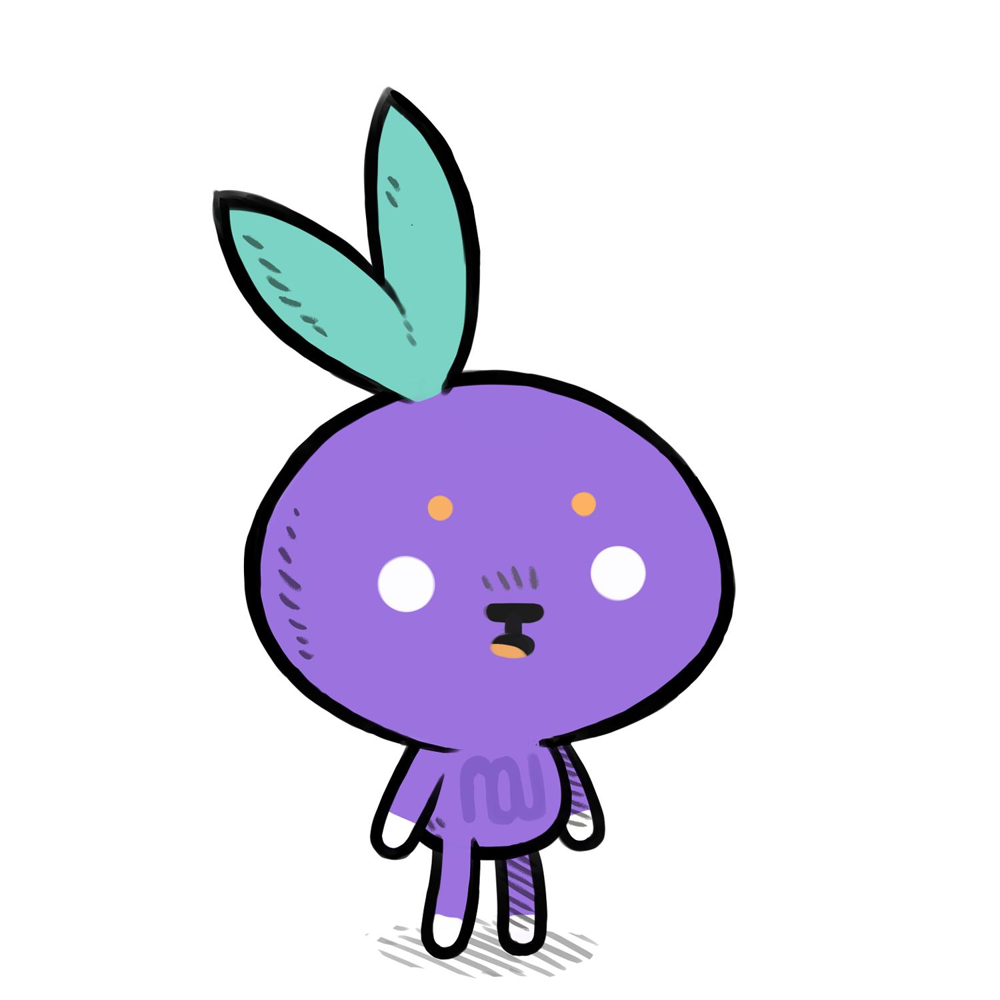

Nasu is a spritesheet editor.
Nasu is a spritesheet editor created to help with the design of interfaces and assets for various Famicom projects. Nasu can import/export in the .chr file format, copy/paste suing the snarf buffer, it can also generate theme files.
As of 2021, the application is distributed as a rom for the Varvara system, you can download the assembled rom here, or find the source code here.
Source
uxnasm nasu.tal nasu.rom
- view source
- download rom, 8kb
- download emulator, 80kb
15J11— Nasu Uxn Release14S13— Nasu Desktop Release14C05— Nasu Original Version
incoming: roms donsol famicom yufo dito graf3dscene chr format nmt format events